Forward modelling with a circular surface loop
Introduction
This example shows the "under the hood" workings of the SNMRForward code, through demonstrating the modelling of a 1D magnetic resonance sounding experiment with a single, circular surface loop.
Setup
Use the SNMRForward package and PyPlot for plotting
using SNMRForward, PyPlotPhysical parameters
Set dimensions for radius and the modelling discretisation grid
R = 50
rgrid = R * (0.01:0.01:2.5)
zgrid = R * (0.01:0.01:2)0.5:0.5:100.0Conductive half-space, 0.001 S/m at 2.5 kHz Larmor frequency. γh is the gyromagnetic ratio of hydrogen bound in water molecules and allows conversion between Larmor frequency and magnetic field intensity.
#
ωl = 2*π*2.5e3 #Hz, typical for Earth's field strength
Be = ωl/SNMRForward.γh
d = Vector{Float64}()#[20.0,30.0]
σ = [0.001]#,0.1, 0.02]1-element Vector{Float64}:
0.001Excitation field
This cell calculates the subsurface field produced by the surface coil. This function calculates this by inversion from the Hankel domain using "quadrature with extrapolation" (see Kerry Key, Geophysics 77(3), F21-F30 (2012)), which is more numerically stable for evaluation of the field in the near surface, where the Hankel transform integral is oscillatory and converges slowly.
(Hz,Hr) = SNMRForward.magfields_qwe(R,ωl,σ,d,rgrid,zgrid)
# plot the real part of the fields
fig, ax = subplots(1,2)
sca(ax[1])
pcolor(rgrid, zgrid, real.(Hz)', vmin = -0.01, vmax=0.01)
gca().invert_yaxis()
sca(ax[2])
pcolor(rgrid, zgrid, real.(Hr)', vmin = -0.01, vmax=0.01)
gca().invert_yaxis()
gcf()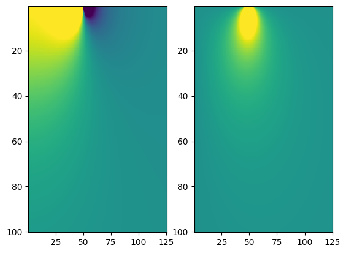
Decompose the excitation field into components that rotate with and against the precession of nuclear spin, assuming a geomagnetic field inclination of 65° (or 13π/36 radians). There is also a phase lag ζ which depends on the subsurface conductivity. Then make a plot of these field components.
#
ϕ = 13*π/36
Hfield_params = SNMRForward.co_counter_field.(Hz, Hr, ϕ, -π/2)
Hco = first.(Hfield_params)
ζ = last.(Hfield_params)
H_counter = reshape([a[2] for a in Hfield_params[:]], size(Hco)...)
#
fig, ax = subplots(1,2,figsize=(10,8))
sca(ax[1])
ylabel("z (m)")
xlabel("r (m)")
title("co-rotating field")
contourf(rgrid, zgrid, log.(Hco)', [-12,-7,-6.5,-6.0,-5.5,-5.0,-4.0,-3.0,-1.0])
gca().invert_yaxis()
sca(ax[2])
title("counter-rotating field")
xlabel("r (m)")
cs = contourf(rgrid, zgrid, log.(H_counter)', [-12,-7,-6.5,-6.0,-5.5,-5.0,-4.0,-3.0,-1.0])
gca().invert_yaxis()
colorbar(cs,location="bottom", ax=ax, label = "log H")
gcf()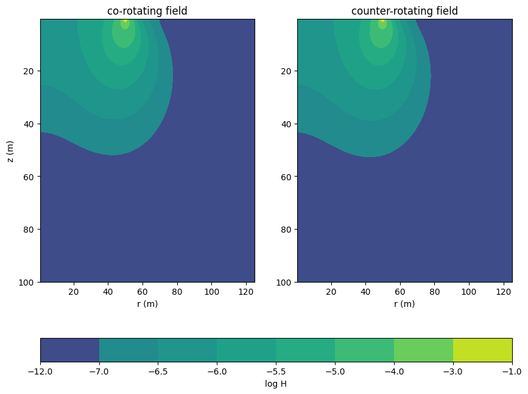
Show the phase lag as a contour plot
#
figure()
cs = contourf(rgrid, zgrid, ζ')
gca().invert_yaxis()
colorbar(cs)
gcf()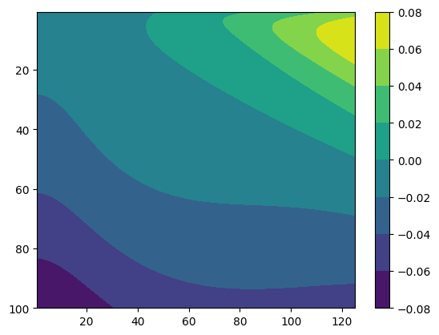
Plot up the co- and counter-rotating B fields with actual value of excitation current (300 A). B-field is shown in Gauss.
# H -> B in tesla or gauss
# for a 300 A current, normalised to match figure 1 of weichman
μ_G = 4*π * 1e-3
norm_factor = 300 * μ_G / 0.299895
fig, ax = subplots(1,2,figsize=(10,8))
sca(ax[1])
ylabel("z (m)")
xlabel("r (m)")
title("co-rotating field")
contourf(rgrid, zgrid, log.(norm_factor * Hco)', [-11,-6,-5.5,-5.0,-4.5,-4.0,-3.0,-2.0,-0.0], cmap="jet")
gca().invert_yaxis()
sca(ax[2])
title("counter-rotating field")
xlabel("r (m)")
cs = contourf(rgrid, zgrid, log.(norm_factor * H_counter)', [-11,-6,-5.5,-5.0,-4.5,-4.0,-3.0,-2.0,-0.0], cmap="jet")
gca().invert_yaxis()
colorbar(cs,location="bottom", ax=ax, label = "log B")
gcf()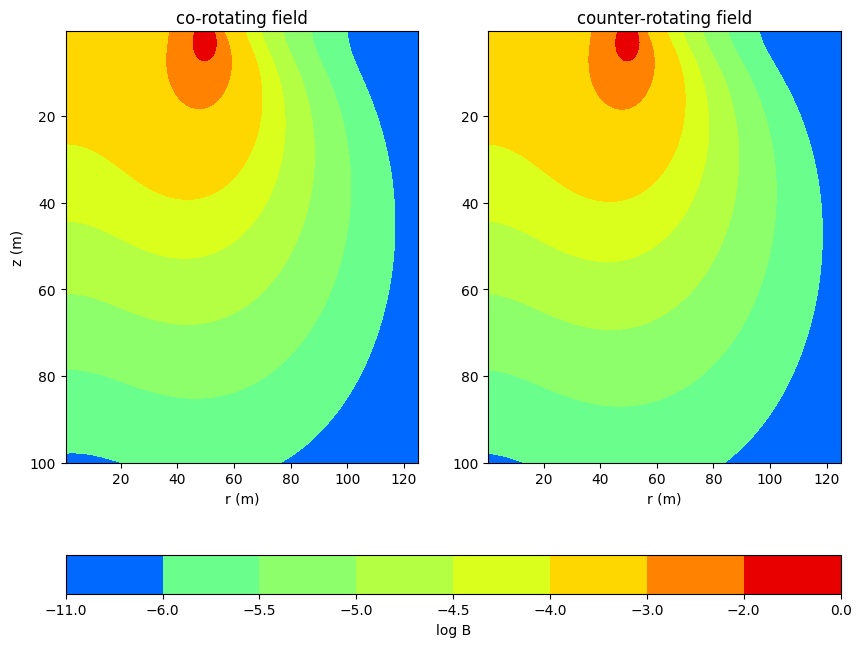
Modelling kernel
We can also compute the sensitivity of the MRS experiment to water in different locations relative to the loop (the kernel), which is done for a number of pulse moments to produce the forward model.
#
μ = SNMRForward.μ0
kernel = SNMRForward.point_kernel.(10, μ * Hco, μ * H_counter, ζ, ωl)
kernel *= SNMRForward.mag_factor(300.0) * ωl/SNMRForward.γh
#
figure()
cs = contourf(rgrid, zgrid, real.(kernel)'/3.89619e-10, levels = [-0.1,-0.05,-0.02,-0.01,0.01,0.02,0.05,0.1],cmap = "gist_stern")
gca().invert_yaxis()
colorbar(cs)
gcf()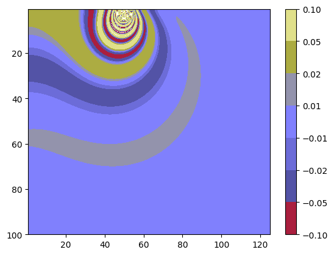
Integrating the kernel horizontally produces a 1D kernel, showing sensitivity to laterally contiguous water layers at each depth in the modelling grid.
#
n_theta_points = 100
thetagrid = range(0, 2*pi, length=n_theta_points)
#radial integral scale
dr = (rgrid[2] - rgrid[1]) * rgrid
#azimuthal integral scale
dtheta = thetagrid[2] - thetagrid[1]
k1d = zeros(ComplexF64, size(zgrid)...)
q = 10
for (i_th, θ) = enumerate(thetagrid)
Hparams = SNMRForward.co_counter_field.(Hz, Hr, ϕ, θ)
Hco = first.(Hparams)
ζ = last.(Hparams)
Hctr = reshape([a[2] for a in Hparams[:]], size(Hco)...)
kernel = SNMRForward.point_kernel.(q, μ * Hco, μ * Hctr, ζ, ωl)
global k1d += dtheta*transpose(kernel)*dr
end
#
Be = ωl/SNMRForward.γh
m0 = SNMRForward.mag_factor(300) * Be
#
full_kernel = k1d * m0 # in V/m
figure()
plot(real.(full_kernel * 10^9), zgrid)
gca().set_yscale("log")
gca().invert_yaxis()
gcf()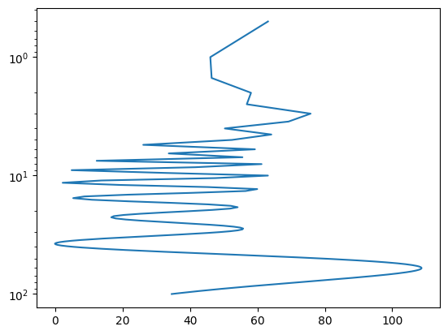
Tipping angle
The "tipping angle" is the amount by which the exciting field rotates the magnetisation of subsurface water away from the geomagnetic field. At shallow depths where the excitation field is strong, the magnetisation may be rotated through one or more full revolutions, although this will not increase the signal from the free induction decay because the maximum signal is produced at a tipping angle of π/2 (perpendicular to the geomagnetic field).
#
θ = -π/2
Hp1 = SNMRForward.co_counter_field.(Hz, Hr, ϕ, θ)
Hp2 = SNMRForward.co_counter_field.(Hz, Hr, ϕ, θ + π)
Hparams = vcat(Hp1[end:-1:1, :], Hp2)
Hco = first.(Hparams)
ζ = last.(Hparams)
Hctr = reshape([a[2] for a in Hparams[:]], size(Hco)...)
q = 10
αt = ((SNMRForward.γh * q * μ * Hco) .% (2*π))/π * 180
xs = vcat(-reverse(rgrid), rgrid)
figure(figsize=(10,5))
cs = contourf(xs, zgrid, αt', levels=[0,45,90,135,210,225,270,315,360])
gca().invert_yaxis()
xlabel("distance from loop centre (m)")
ylabel("depth (m)")
colorbar(cs, label = "excitation angle (degrees)")
gcf()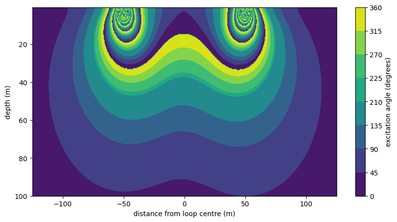
1D kernel for different pulse moments
We can write a function to compute the 1D kernel for a given pulse moment, and explore how pulse moments change the depth sensitivity of the MRS experiment.
#
function kernel_1d(q, ϕ, ωl, Hz, Hr)
n_theta_points = 100
thetagrid = range(0, 2*pi, length=n_theta_points)
#radial integral scale
dr = (rgrid[2] - rgrid[1]) * rgrid
#azimuthal integral scale
dtheta = thetagrid[2] - thetagrid[1]
k1d = zeros(ComplexF64, size(Hz,2))
for (i_th, θ) = enumerate(thetagrid)
Hparams = SNMRForward.co_counter_field.(Hz, Hr, ϕ, θ)
Hco = first.(Hparams)
ζ = last.(Hparams)
Hctr = reshape([a[2] for a in Hparams[:]], size(Hco)...)
kernel = SNMRForward.point_kernel.(q, μ * Hco, μ * Hctr, ζ, ωl)
k1d += dtheta*transpose(kernel)*dr
end
k1d
end
# contour plot of 1D kernel (cf. fig. 5.6, Hertrich)
qgrid = [0.1,0.25,0.5,0.75,1,2,3,4,5,6,7,8,9,10,11] .* 2
ϕ = 12*π/36
kq = reduce(hcat, kernel_1d(q, ϕ, ωl, Hz, Hr) for q in qgrid)
#
fig, ax = subplots(1,1,figsize=(5,10))
contourf(qgrid, zgrid, 10^9 * real.(kq*m0), cmap="RdBu_r", levels=[-150,-100,-50,-25,0,25,50,100,150])
gca().invert_yaxis()
xlabel("q (A s)")
ylabel("Depth (m)")
colorbar(label = "Real part of 1D kernel (nV/m)")
gcf()
# "log sensitivity" (Fig. 5.5, Hertrich)
fig, ax = subplots(1,1,figsize=(7,10))
contourf(qgrid, zgrid, log10.(10^9 * abs.(kq*m0)), levels=[-1,0.1,0.6,1.15,1.7,2.5], cmap="jet")
gca().invert_yaxis()
xlabel("Pulse moment (A s)")
ylabel("Depth (m)")
colorbar(label = "log(1D sensitivity (nV/m))")
gcf()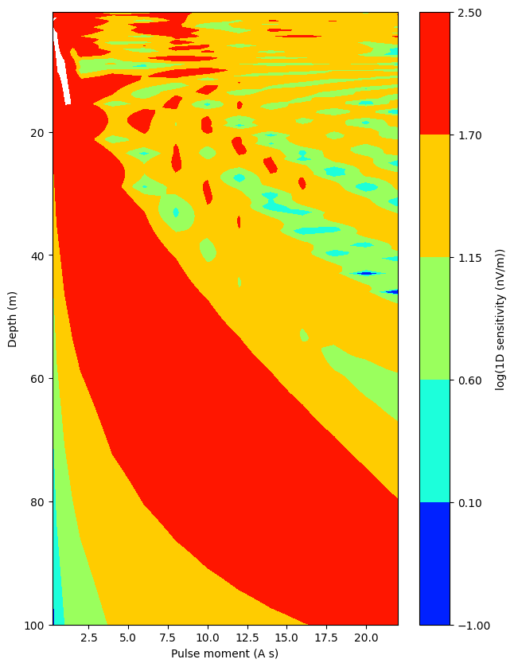
Forward modelling of the sounding curve
The result of the forward modelling is a "sounding curve" - this corresponds to the initial amplitude of the free induction decay signal recorded by the receiver, for each pulse moment. We can examine the sounding curves for fully saturated water layers at different thicknesses and depths.
# do an actual forward model
dz = zgrid[2] - zgrid[1]
fwd_kernel = kq * m0
# 10 - 20 m
w = zeros(length(zgrid))
w[(zgrid .>= 10) .& (zgrid .<= 20)] .= 1
response = transpose(fwd_kernel) * w * dz
fig, ax = subplots(1,3, figsize=(15,5))
sca(ax[1])
plot(qgrid, real.(response))
title("Saturated layer 10 - 20 m")
ylabel("Response voltage (V)")
xlabel("Pulse moment (A s)")
# 30 - 45 m
w = zeros(length(zgrid))
w[(zgrid .>= 30) .& (zgrid .<= 45)] .= 1
response = transpose(fwd_kernel) * w * dz
sca(ax[2])
plot(qgrid, real.(response))
title("Saturated layer 30 - 45 m")
xlabel("Pulse moment (A s)")
# 60 - 80 m
w = zeros(length(zgrid))
w[(zgrid .>= 60) .& (zgrid .<= 80)] .= 1
response = transpose(fwd_kernel) * w * dz
sca(ax[3])
plot(qgrid, real.(response))
title("Saturated layer 60 - 80 m")
xlabel("Pulse moment (A s)")
gcf()
#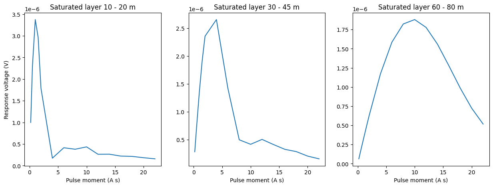
Depth slices of sensitivity
We can explore the kernel a bit more by looking at depth slices, showing how sensitivity even at a constant depth can change with lateral position
# horizontal cross section of the kernel
q = 10
Hz_cross = Hz[:,6]
Hr_cross = Hr[:,6]
thetagrid = (0:1:360)./360 * 2 * π
Hfield_params = reduce(hcat, SNMRForward.co_counter_field.(Hz_cross, Hr_cross, 13*π/36, θ) for θ in thetagrid)
Hco = first.(Hfield_params)
ζ = last.(Hfield_params)
H_counter = reshape([a[2] for a in Hfield_params[:]], size(Hco)...)
kernel_cross = m0 * SNMRForward.point_kernel.(q, μ*Hco, μ*H_counter, ζ, ωl) * 10^9
fig = figure()
ax = fig.add_subplot(projection="polar")
ax.set_theta_zero_location("N")
ax.set_rticks([25,50,75,100])
ax.set_yticklabels(["25","50","75","r = 100 m"])
pcolormesh(thetagrid, rgrid, real.(kernel_cross)/0.059512, cmap="RdBu", vmin=-1.0, vmax = 1.0)
colorbar(label="Normalised real kernel")
gcf()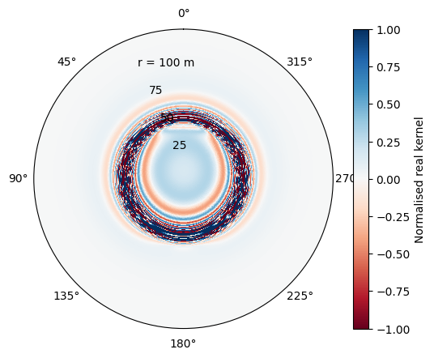
The forward modelling API
Now let's actually use the defined forward modelling API, having shown what we're doing "under the hood".
# Actually use the defined structs in the package to do forward modelling
condLEM = SNMRForward.ConductivityModel(σ, d)
qgrid = [0.1,0.25,0.5,0.75,1,2,3,4,5,6,7,8,9,10,11,12,13,14,15]
ϕ = 13*π/36
F = SNMRForward.MRSForward(R, zgrid, qgrid, ϕ, Be, condLEM)
#
w = zeros(length(zgrid))
w[(zgrid .>= 30) .& (zgrid .<= 45)] .= 1
data = SNMRForward.forward(F,w)
figure()
plot(qgrid,real.(data))
gcf()
#
w = zeros(length(zgrid))
w[(zgrid .>= 10) .& (zgrid .<= 20)] .= 1
response = SNMRForward.forward(F,w)
fig, ax = subplots(1,3, figsize=(15,5))
sca(ax[1])
plot(qgrid, real.(response))
title("Saturated layer 10 - 20 m")
ylabel("Response voltage (V)")
xlabel("Pulse moment (A s)")
gca().ticklabel_format(axis="y", style="sci", scilimits=(0,0))
# 30 - 45 m
w = zeros(length(zgrid))
w[(zgrid .>= 30) .& (zgrid .<= 45)] .= 1
response = SNMRForward.forward(F,w)
sca(ax[2])
plot(qgrid, real.(response))
title("Saturated layer 30 - 45 m")
xlabel("Pulse moment (A s)")
gca().ticklabel_format(axis="y", style="sci", scilimits=(0,0))
# 60 - 80 m
w = zeros(length(zgrid))
w[(zgrid .>= 60) .& (zgrid .<= 80)] .= 1
response = SNMRForward.forward(F,w)
sca(ax[3])
plot(qgrid, real.(response))
title("Saturated layer 60 - 80 m")
xlabel("Pulse moment (A s)")
gca().ticklabel_format(axis="y", style="sci", scilimits=(0,0))
gcf()
#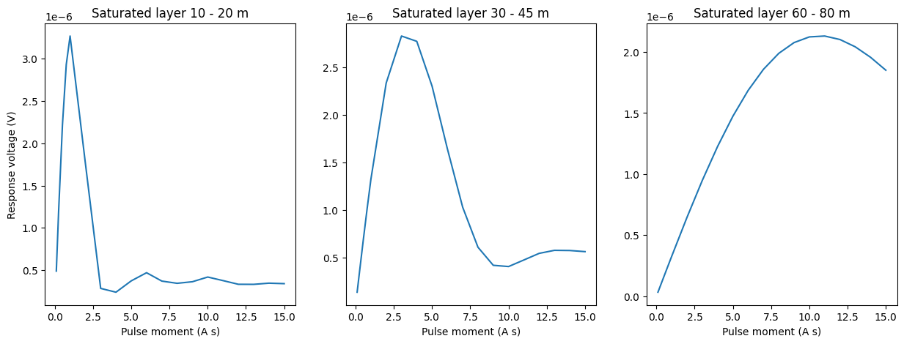
This page was generated using Literate.jl.